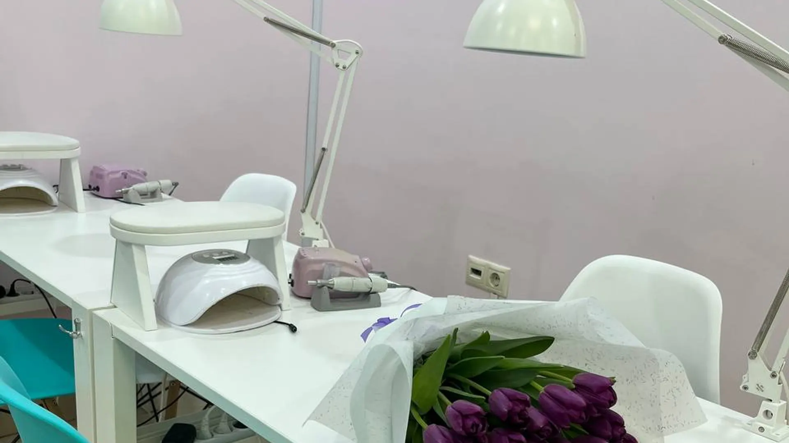
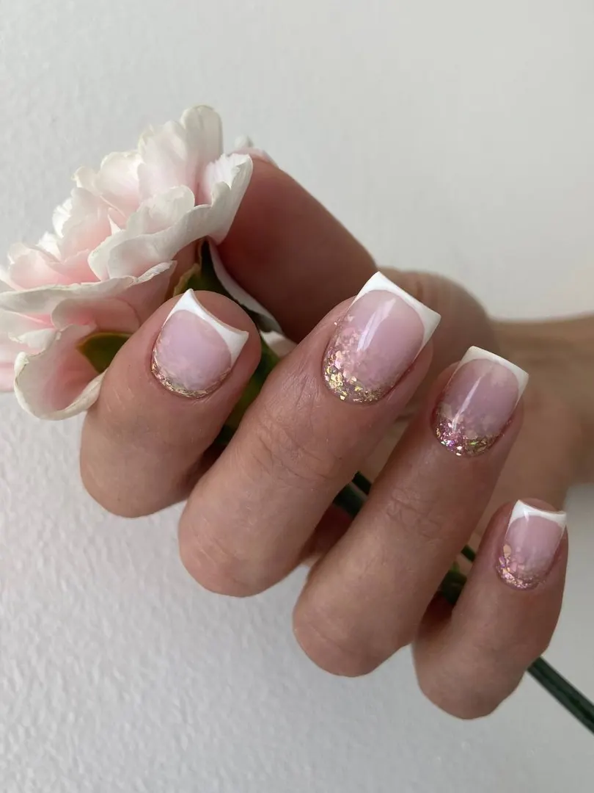
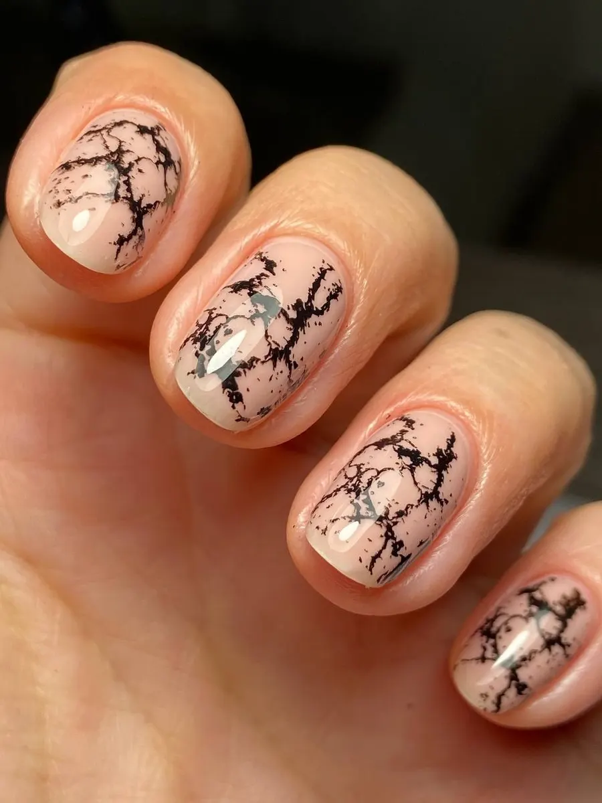
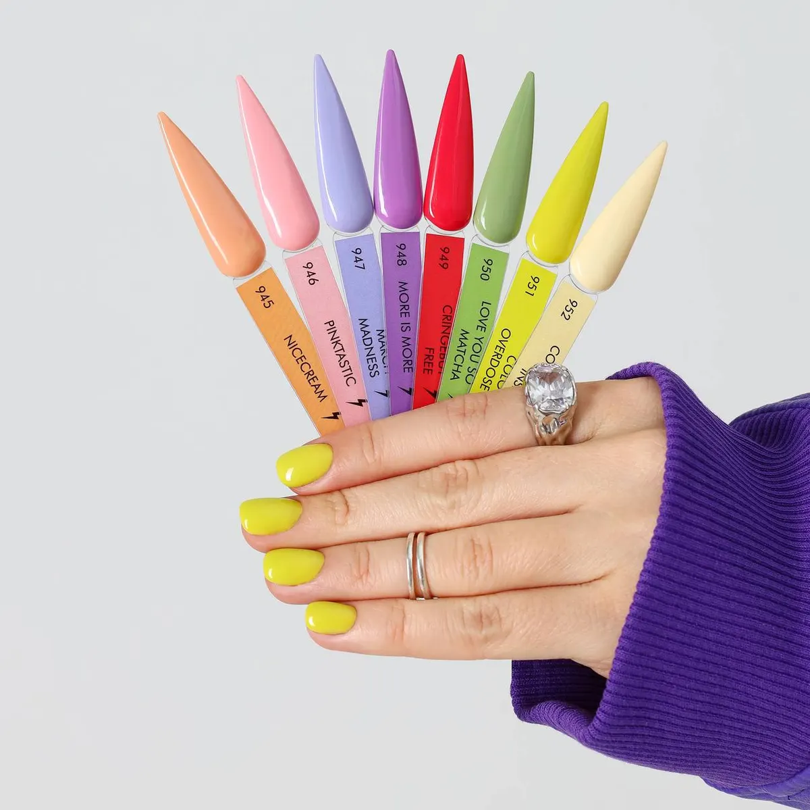

Ногтевая студия · Пермь
Маникюр и педикюр в центре Перми – цена по уровню мастера
Младший мастер, мастер или топ-мастер: цена каждого уровня в прайсе. Запись онлайн.
- Три уровня мастеров, цена названа
- Покрытие лечебным лаком в подарок при маникюре без покрытия
- Есть онлайн-запись

Услуги и цены
Цены с карточки студии на Яндекс.Картах.
Маникюр
- Без покрытиямладший мастер 800 · мастер 1100 · топ-мастер 1650от 800 ₽
- С цветным лакоммладший мастер 1000 · мастер 1350 · топ-мастер 1800от 1 000 ₽
- Комплекс «Покрытие цвет»младший мастер 1550 · мастер 1950 · топ-мастер 2400от 1 550 ₽
- Комплекс «Камуфляж»младший мастер 1450 · мастер 1800 · топ-мастер 2250от 1 450 ₽
Педикюр
- Пальчики без покрытиямладший мастер 1350 · мастер 1550 · топ-мастер 1800от 1 350 ₽
- Пальчики и гель-лакмладший мастер 1600 · мастер 1800 · топ-мастер 2050от 1 600 ₽
- Смарт-педикюр без покрытиямладший мастер 2050 · мастер 2250 · топ-мастер 2500от 2 050 ₽
- Смарт-педикюр и гель-лак или лакмладший мастер 2350 · мастер 2550 · топ-мастер 2800от 2 350 ₽
Цены с карточки на Яндекс.Картах, пометка «давно не обновлялось»: актуальные назовёт администратор. В комплекс входят снятие, укрепление и покрытие, подробности состава есть на карточке.
Как записаться
- 01
Выбираете услугу и уровень мастера
Цена каждого уровня названа в прайсе.
- 02
Записываетесь онлайн или в мессенджере
Есть Telegram, WhatsApp, Viber и ВКонтакте.
- 03
Приходите на Комсомольский проспект, 51
Студия открыта ежедневно.



Что важно знать
Три уровня мастеров
Младший мастер, мастер, топ-мастер: цена растёт вместе с опытом.
Лечебный лак в подарок
При маникюре и педикюре без покрытия (по карточке).
Подарочные сертификаты
Фото сертификата есть на карточке студии.
Отзывы с Яндекс.Карт
«Записывалась на коррекцию, но пришлось делать наращивание. По времени прекрасно уложились. Мастер Диана сделала все очень качественно и быстро. Весь день любуюсь ногтями. Работа на высочайшем уровне!»
Дарья С. · 20 июня
«Став случайным клиентом данного салона, хочу сказать, что я в восторге от работы мастеров и администраторов. Маникюр для меня теперь стал хоть и быстрым, но очень приятным отдыхом. Спасибо»
Варвара · 26 апреля 2025
«В салоне " Маникюрим". Очень приятная атмосфера. Администратор дружелюбно встретила, с заботой предложила чай и кофе. Очень аккуратно и красиво сделала маникюр мастер Елизавета. Очень довольна, приду ещё. Благодарю!»
Ильсия Г. · 16 мая 2025
Отзывы с карточки на Яндекс.Картах, без правок.
Запись на ближайшие дни
- Адрес
- Комсомольский просп., 51, Пермь
- Часы
- Ежедневно, 08:00–22:00
- Телефон
- +7 (902) 030-40-03